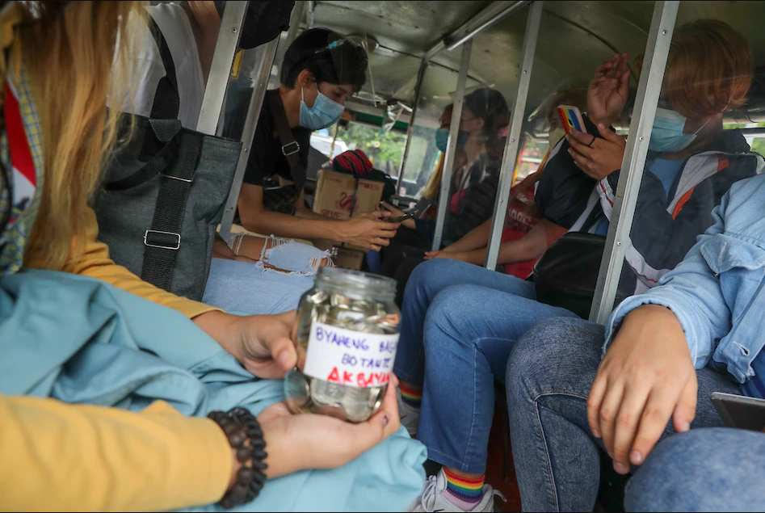

Mayor wants in-person classes for Taguig elementary school delayed
ABS-CBN News | Posted at Oct 29 2021 10:13 PM
MAYNILA - Ipapatupad na ang 70 percent capacity sa pampublikong transportasyon sa Metro Manila simula sa Nov. 4 sa kabila ng page-extend ng Alert Level 3 sa rehiyon, ayon sa mga awtoridad.
Yan ang inanunsyo ng Department of Transportation (DOTr) at Land Transportation Franchising and Regulatory Board (LTFRB) nitong Biyernes.
Dagdag ng DOTr, mas paghihigpitin nila ang monitoring sa mga sasakyang lumalabag sa panuntunan ng Inter-Agency Task Force on COVID-19 at huhulihin nila ito.
Anila, napansin ng iba na punuan na ang pagsasakay ng mga pampublikong sasakyan nitong mga nakaraang araw kahit 50 percent capacity lang ang pinapayagan.
Ito ang dahilan kaya nakikiusap sila sa transport operators, mga driver at pasahero na makiisa sa kanila at sumunod sa protocols para iwas aberya at para iwas hawahan ng COVID-19.
Pabor naman ang mga drayber sa napabalitang panukala ng DOTr na palawigin sa 100 porsiyento o punuan ang kapasidad ng mga pampublikong sasakyan, ayon sa isang samahan.
Dagdag ng grupo, marami nang drayber ang bakunado na kontra-COVID-19.